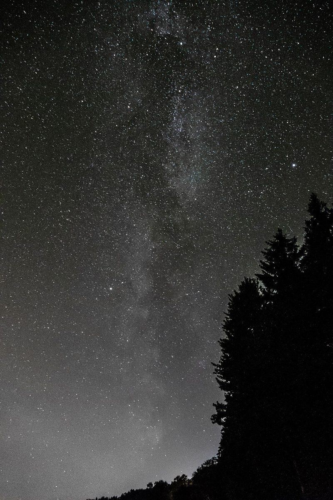
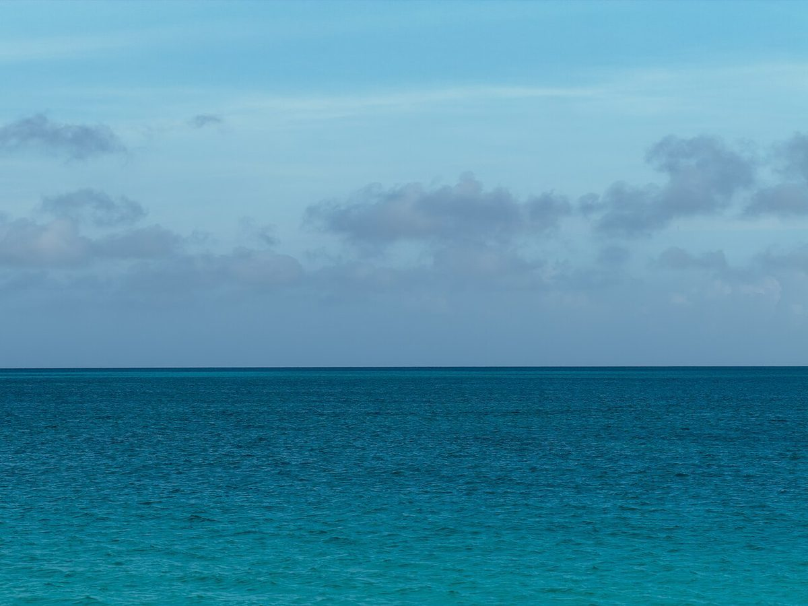

カフェ / 和歌山県御坊市
METEORGARAGE
メテオガレージ
和歌山県御坊市のカフェ「メテオガレージ」のご案内ページです。営業時間やメニューなど詳しいことは準備中。まずはInstagramをのぞいてみてください。

制作側の連想
「メテオ」と「ガレージ」から考えたこと
店名の由来は分かりません。制作側は「メテオ(流星)」から夜空を、「ガレージ(車庫)」から上げ下げするシャッターを連想しました。そこでこのページは、シャッターがどこまで開いているかで写真を見せる作りにしています。お店の理念や由来とは無関係な、制作側の連想です。
シャッターの三段階
閉まる、半分、開く。
写真は御坊市やお店のものではありません。国外・撮影地不明のフリー素材のイメージです。



夜空のイメージ
流れ星を探す夜。


ご案内
お店のこと(確認できたものだけ)
| 所在地 | 〒644-0001 和歌山県御坊市御坊１４５−１ |
|---|---|
| 電話 | なし |
| 営業時間 | 準備中 |
| 定休日 | 準備中 |
| ご予約 | 準備中 |
| 駐車場 | 準備中 |
| SNS | Instagram @meteorgarage |